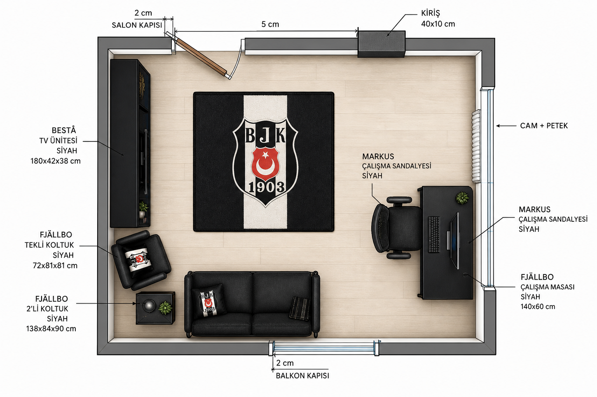
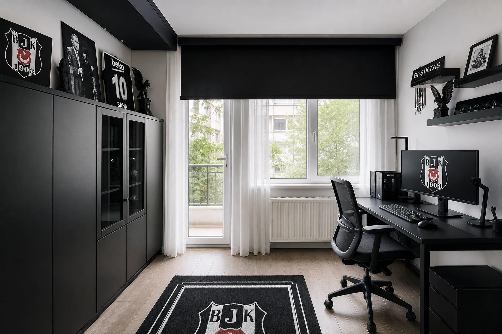
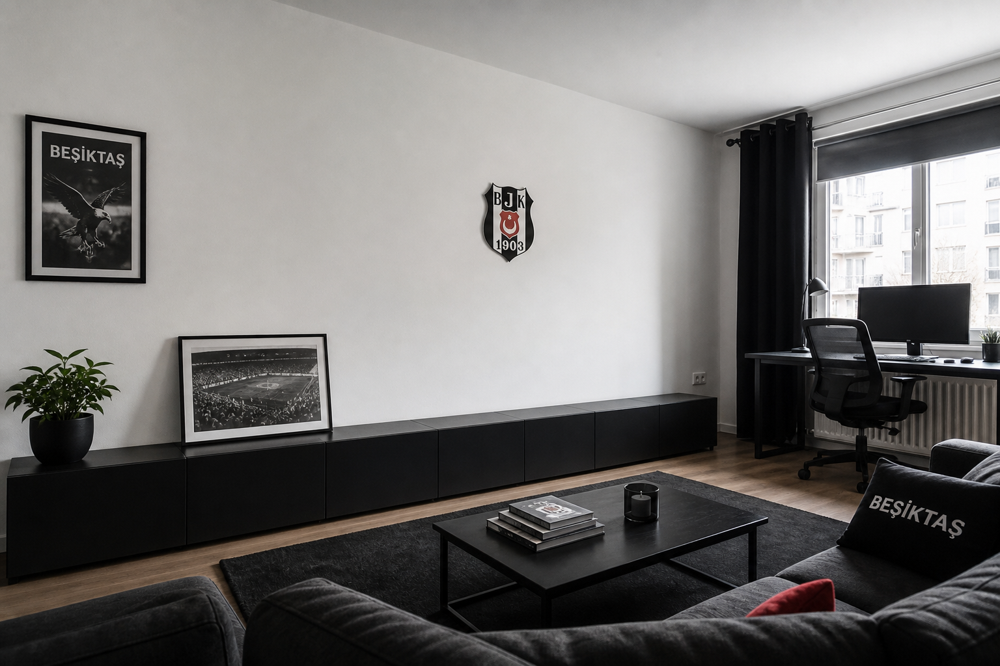

01
Sağ — Cam + Petek → çalışma
FJÄLLBO 100×36 siyah masa, peteğin önünü kapatmadan yanına / ofset. MARKUS koyu gri sandalye. Kablo kanalı masa altında. Beyaz tül + siyah stor.
Beşiktaş siyah-beyaz · ölçülü kroki · satılabilir mobilya
Doğru plana kilitli atölye: cam yanında çalışma, sol duvarda depo, kapı salınımları ve kiriş boş.
Tasarım bu geometriye göre — kapı ve kiriş yerleri değişmez.


Siyah, beyaz, antrasit. Forma dekoru değil — kartal kimliğinin mimari dili.
Her duvarın tek işi. Kiriş ve kapı salınımlarına dokunulmaz.
FJÄLLBO 100×36 siyah masa, peteğin önünü kapatmadan yanına / ofset. MARKUS koyu gri sandalye. Kablo kanalı masa altında. Beyaz tül + siyah stor.
En temiz uzun yüzey. BESTÅ 120×42×193 venge-siyah (elektronik, kablo, yazıcı). Yanında veya yerine ≤160 cm siyah/antrasit oturma. Kapı salınımı yok — güvenli bant.
Salon kapısı salınımı açık. Kiriş 40×10 cm çıkıntıya mobilya yaslanmaz. İnce askı / tek raf kirişten uzağa.
Balkon kapısı soldan 2 cm; iç açılım boş. Ayakkabı/sepet salınım dışına, sağa doğru duvara yanaşık.



İnternette satılan ürünler · fiyatlar IKEA TR (Temmuz 2026, değişebilir).
Cam/petek yanına sığar, peteği kapatmaz. Kod: 303.397.35
ikea.com.tr →Yer varsa; yine petek önünü kapatmadan ofset. 905.876.90
ikea.com.tr →Baş/kol dayama, 10 yıl garanti. 702.611.50
ikea.com.tr →Sol düz duvara — kablo, kutu, yazıcı. 590.594.61
ikea.com.tr →BESTÅ’ya sığmayanlar / açık sergi — sol duvar. 202.758.85
ikea.com.tr →Sol duvarda BESTÅ ile paylaşım veya tek başına. Kapı yayına girmesin.
vivense.com →Masa üstü sıcak ışık + kablo düzeni.
IKEA tamamlayıcı →Camda kontrol; tek kırmızı nokta (opsiyonel 1903 vurgu).
trendyol.com →